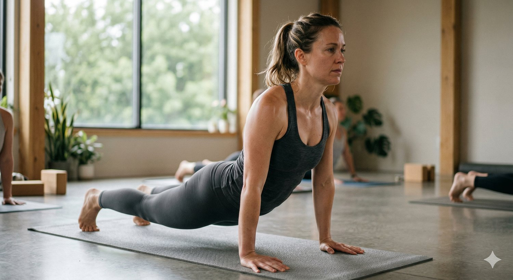
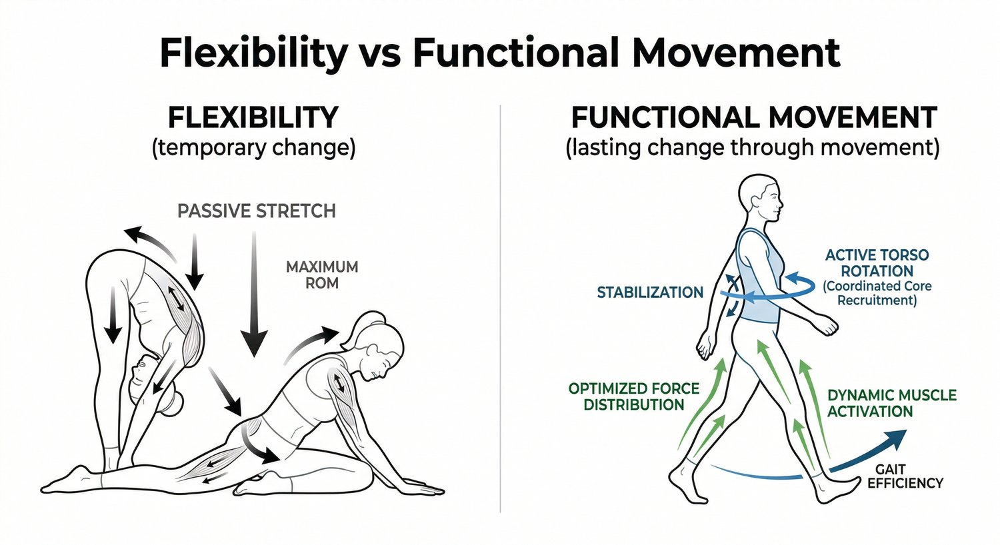

If your posture feels off, yoga is usually one of the first things people recommend.
It makes sense. You move more, you stretch more, you feel looser. For a lot of people, it’s the first time they become aware of how stiff or tight their body actually is.
And in the short term, it can feel like it’s working.
You walk out of a class feeling taller. Your shoulders drop. Your back feels more open.
But then, a few hours later, or the next day, everything slowly goes back.
That’s the part most people don’t understand.
Why Yoga Feels Good for Posture

Yoga does something most people are missing: it gets you out of static positions.
When you’re sitting most of the day, your body doesn’t get much variation. Your joints don’t move through full ranges. Your breathing becomes shallow. Your muscles start holding tension in predictable places.
Yoga interrupts that pattern.
It introduces movement, lengthens tissues, and gives your nervous system a break from constant compression. That’s why you often feel lighter and less restricted afterwards.
For someone who hasn’t been moving much, that alone can make a noticeable difference.
But feeling better and functioning differently are not the same thing.
Why Posture Changes Don’t Always Stick
The main reason posture doesn’t improve long-term is because the underlying pattern hasn’t changed.
You might be more flexible after yoga. You might even be stronger in certain positions.
But your body still organises movement the same way it did before.
If your system:
-
doesn’t rotate well
-
doesn’t transfer load efficiently
-
relies on the same compensations
then it will keep returning to the same posture.
This is why you can practise regularly and still feel:
tight through the upper back, pulled forward at the shoulders, or uneven from side to side.
The body always defaults to what it can coordinate under normal conditions, not what it can do in a controlled class environment.
The Missing Link: How You Move Outside the Mat
Posture isn’t something you hold. It’s something that shows up from how you move.
The biggest influence on your posture isn’t what you do for one hour in a class. It’s what you repeat the other 23 hours of the day.
That includes how you:
-
walk
-
sit
-
shift your weight
-
use your arms and torso together
If those patterns aren’t efficient, they reinforce the same tension and compression over and over again.
One of the biggest gaps we see is a lack of coordinated rotation through the body.
Walking should involve a subtle, continuous rotation between your ribcage and pelvis. That rotation allows force to travel through the body without overloading any one area.
When that’s missing, the system becomes more rigid. The upper back starts to stiffen, the shoulders round forward, and the neck begins to take on more load.
Over time, that’s what shapes your posture.
Why Flexibility Alone Isn’t Enough
A lot of yoga-based posture advice focuses on flexibility.
But flexibility without control doesn’t change how your body behaves under load.
You might be able to open your chest in a pose. But if you can’t maintain that relationship between your ribcage, pelvis, and spine when you’re walking, sitting, or training, your body won’t keep it.
It will return to the pattern that feels most stable.
That’s why many people feel:
loose during class, but tight again shortly after.
It’s not because yoga “doesn’t work.” It’s because it’s only addressing part of the problem.
What Actually Changes Posture Long-Term
For posture to change in a lasting way, your body needs to move differently in everyday situations.
That means:
Your system needs to regain the ability to rotate efficiently.
Your body needs to distribute force across multiple joints instead of compressing into a few.
Your movements need to become more coordinated, not just more flexible.
When that happens, posture improves without you thinking about it.
You’re not forcing yourself to sit or stand a certain way. You’re simply moving in a way that supports better alignment.
Where Yoga Fits In
Yoga can absolutely be a useful tool.
It can:
-
increase awareness of your body
-
improve general mobility
-
reduce excessive tension
-
give you a break from static positions
But on its own, it often doesn’t address how your body organises movement under real-world conditions.
If your goal is long-term posture change, yoga works best when it’s combined with a system that retrains:
-
coordination
-
load transfer
-
gait mechanics
What We Do Differently (At Functional Patterns Brisbane)

Instead of focusing on individual poses, we look at how your whole system works together.
We assess how you walk, how your ribcage and pelvis interact, and where your body is compensating.
From there, we retrain movement so that:
-
rotation is restored
-
load is distributed more evenly
-
your body can maintain better positions without effort
This isn’t about replacing yoga. It’s about filling in the gaps that most people don’t realise are there.
If You’ve Tried Yoga for Posture But Still Feel Stuck
If you:
-
feel better during class but tight again after
-
notice your shoulders rounding forward over time
-
feel stiff through your upper back or neck
-
keep trying to “fix your posture” but nothing sticks
there’s usually a deeper mechanical reason.
CTA (Assessment)
👉 Book an initial assessment at Functional Patterns Brisbane (Bulimba)
We’ll look at how your body actually moves, identify what’s missing, and give you a clear plan to improve your posture properly.